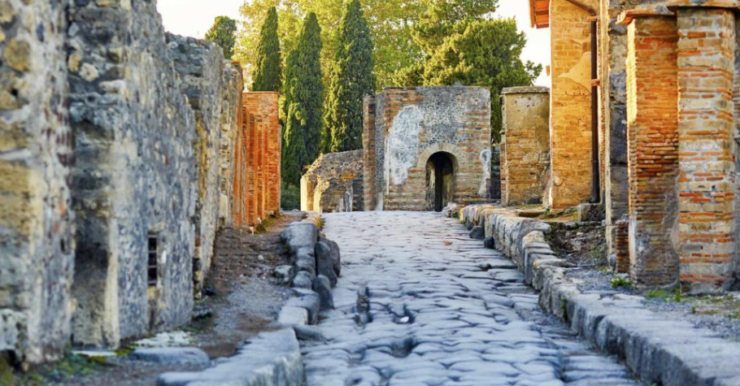
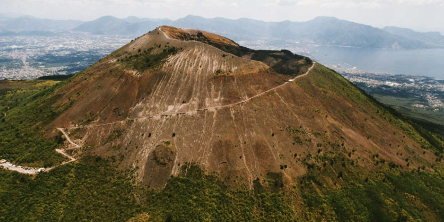

Pompeii was an ancient Roman city located near Naples, Italy. It became famous after being buried by the eruption of Mount Vesuvius in 79 AD. The volcanic ash preserved homes, streets, and even everyday objects, giving people today a look into ancient Roman life.

Pompeii is one of the most famous archaeological sites in the world. Because the city was covered in ash so quickly, many parts remained frozen in time. Historians have learned a lot about Roman culture, architecture, and daily life from Pompeii.

In 79 AD, Mount Vesuvius erupted and covered Pompeii with ash and rock. Thousands of people were trapped, and much of the city disappeared for centuries. Archaeologists later uncovered the city and discovered preserved buildings, artwork, and artifacts.
Want to learn more about Pompeii? Visit History.com's Pompeii page .